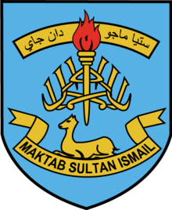

Maktab Sultan Ismail
"We Strive For Excellence" "Setia, Maju dan Jaya"
|  |  |
Jump to a higher age, then start a high school session. Maktab Sultan Ismail or Sultan Ismail College or better known as SIC, is a secondary education institution that offers education ranging from Level 1 to Level 6. (Pra-Universiti). At the beginning of its establishment, the school was named Ismail English School (IES) and served in a building at the Malay School Padang Garong at Jalan Hospital, Kota Bharu.
By the end of 1936 IES had moved to a new building in Telipot. IES changed its name to Sultan Ismail College (Maktab Sultan Ismail/MSI) on 17 April 1954. So far, a school of that caliber has been equipped with facilities such as classrooms broken down into several blocks, libraries, counseling rooms, canteens, music rooms, teacher rooms, toilets, pure science labs, and so on.
At the low middle level when I was in school there, Level 1 to Level 3, this school offers four (4) courses, namely Arabic, Music, Japanese, and DLP. (Dual Language Program). Because of my interest in Japanese, I chose a Japanese stream class that was broken up into two (2) classes and I can say my choice did not disappoint myself. Among the memories that are still fresh in mind is that at the time of Level 3, our Japanese students were taught by a teacher or 先生 (sensei) who came from Japan. As the saying goes, standing high, sitting low we can not only learn Japanese culture and customs from the teacher, but we also teach him about the culture and custom in Malaysia, such as food, clothes, Malay language, and so on.
In the upper middle level, Level 4 and Level 5, there are three (3) types of flow that are divided into STEM A, B, and C. At that time, STEM A was a class that took pure science subjects such as Biology, Chemistry, and Physics, and Additional Mathematics. STEM B also takes pure science, but those who enter STEMB do not take Biology but they take Accounting whereas STEM C is a literary stream where those who occupy this class will take Tasawwur and Additional Science which means they don't take pure science and Additive Mathematics subjects. Because of the encouraging PT3 results, I'm grateful I entered a second-class STEM A at Level 4 and stayed up to Level 5.
A Malaysian Education Certificate (SPM) is a certificate that is mandatory for every student who wants to connect to the university level. Thank God SWT over His purification, I got a 7A and 2B score once gus placing me as the No. 2 best SPM student at school level at the time. Though it doesn't sound very exciting, for all knowledge, we were the first group of SPMs in a new format, KSSM. With the question, the silibus, and the more difficult format, we can say we're the lab mouse for this new silibus test.
Finally, this school provides Pre-University (Pra-U) Level 6 education. There are two levels, Lower Six and Upper Six, which is not my mistake, two-and-a-half years (2 1/2 years) or five to six semesters. There are three (3) types of Pre-U currents offered in Sultan Ismail's Maktab, namely pure science, sports science, and literature. At first, I was offered to join my studies at Level 6, but I refused because I wanted to focus on preparing for the current diploma level.
A glimpse of fact 1: Many of the national figures are alumni of this university, including Yang Amat Arif Tun Tengku Maimun Tuan Mat, Chief Justice of Malaysia, and Dato' Sri Mustapa Mohamed, former Minister in the Department of the Prime Minister (Economy) during the reign of the Cabinet of Yang Amat Berhormat Tan Sri Dato' (Dr) Haji Muhyiddin Bin Haji Muhammad Yassin and Yang Amat Berhormat Dato' Shri Ismail Sabri Yaakob.
A glimpse of fact 2: It is among the few schools that offer Pre-University/Level 6 (STPM) studies in Kelantan.
A glimpse of fact 3: Sultan Ismail's Maktab is equipped with a variety of sports facilities such as soccer fields, rugby, cricket, long jump, high jump, futsal, netball, bowling, and more.
A glimpse of fact 4: Hostel facilities are available to students from far away from Bharu City and to students who are interested in staying there even though their homes are in the city area.
A glimpse of fact 5: It is one of six schools that use the name KDYMM Sultan Ismail Ibni Sultan Muhammad IV. The schools that also use the name of Sultan Ismail are SK Sultan Ismail 1 in Batu 2, SK Sultan Ishmael 2 in Long Yunus Road, SK Sultan Ismael 3 in Bunut Payong,SK Sultan Ismail 4 in Guchil Bayam Road, and SMK Sultan Ismail in Telipot Road next to Sultan Ismail's Maktab.